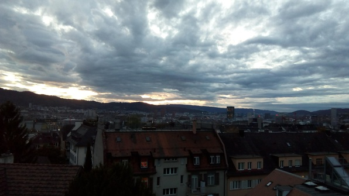
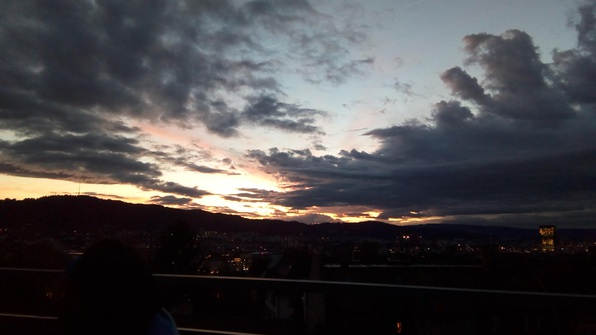
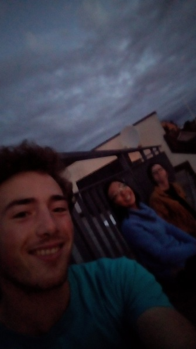

Slept in late! Had nice breakfast, chatted with Daria who’s a new bachelor’s student.
Off to Mittagsseminar, crazy lecture on a supposedly “well-known” problem about the Turán number of a number \(n\) and a graph \(H\), that is, the maximal number of edges that a graph on \(n\) vertices can have without containing \(H\) as a subgraph. Except that the speaker partially solved a different version of the problem (up to \(H's\) with 6 vertices) where the graph \(H\) was ordered. Well. What a weird world theoretical CS is!
Hauled to Mensa and chowed down on some weird sausage with risotto thing. While eating lunch, solved a bunch of homework problems :D then hopped on the bus to the Höngg. On the bus, solved the entire RIAI homework in my head (at least, I think I did). Felt pretty awesome, except then, some yokel got pissed at me for putting my feet up on a bus seat. It’s really interesting how it’s culturally acceptable to critique strangers for behaviours not affecting oneself, almost everywhere except the US.
QI class was really fun, we learned about tests for distributions and stochastic transitions being different (in the context of designing transitions that simulated ideal distributions so that they were difficult to tell apart).
After that, back to Zentrum, had a fun conversation with Martin in the bus :D Went to language class, took a quick random walk, went to the first half of a study tips event where they discussed oral exams (very useful), then ran back to Culmann to hang on the roof with Betty and Ruth.



It was stunning up there with the clouds rushing by and ten different shades of orange hanging over the mountains. While we sat on the edge of the roof deck I got a call from Abhi. He wanted to take a walk. Ended up snowballing into five of us going to meet Abhi, we took a random walk and ended up, completely by chance, at the Zurich film festival. We decided to watch a movie!
Grabbed a slice of pizza first, then watched “Brad’s Status”, an intense movie about a fellow torn apart by the success of his friends. It was the first showing ever so the director was there:
That provoked a deep conversation with Betty and Abhi, who along with myself could relate to the existentialism of the movie; the others thought it was overdone, which I found interesting.
After that had a quick skype with Grace and wrote this log! Night!